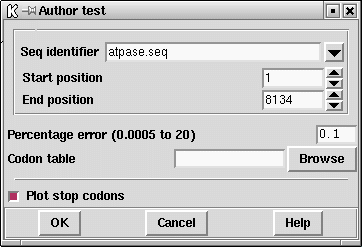

This is an unpublished method for distinguishing between coding and noncoding segments of a DNA sequence. It is basically an extension of the Codon Usage method in which we compare the sequence to two tables of codon usage to see which of the two it is most like. One table should contain typical codon usage from a coding sequence and the other typical codon usage from a noncoding region. It is based on methods used to decide authorship of text - is the usage of words (codons) more like that of author A (coding) or that of author B (noncoding)?
The results for each reading frame are plotted in the graphics
window with frame 1 in the top panel, frame 2 the middle and frame 3
in the bottom panel. Frame 1 is the frame of the first base in the
active region. At each position along the sequence the program
also plots a single dot for the reading frame with the highest
score. These dots appear at the midpoints of the three panels and will
form a continuous line if one reading frame is consistently the
highest scoring.
The figure shows a SPIN Sequence Plot containing the results of
the author test method on a sequence from E. coli.
Also visible are the cross hairs. Their x position is shown
in sequence base numbers in the left hand box above the plot, and the y
coordinate, expressed using the score values of the gene search, is
shown in the right hand box. Each line in the window has its own colour
and can be dragged and dropped to new locations to reorganise the plot.
The cursor in the plot can be used to control the position of the
cursor in the sequence display.
The mathematical treatment of the data is very different from that of
the codon usage method.
Given the two tables of codon usage the algorithm works out the
optimal weighting to give each codon to obtain the best discrimination
between coding and noncoding sequence.
The user sets the expected error rate as a percentage and the algorithm
will choose the corresponding window length to use for the analysis.

The user should supply the name of a file containing two concatenated
codon usage tables - the first being from coding sequence and the
second from noncoding sequence.
This double codon table can be calculated by
spin using
the Codon Usage function
(see section Calculate codon usage).
If the user gives
the name of a file that contains only a single codon table the
algorithm will assume that it is from coding sequence, and will
generate a noncoding table that consists of the frequencies
that would be expected if the sequence being analysed was random.
The region to be analysed can also be set.
![[picture]](spin_author_p,6in.png.html)
(Click for full size image)
A typical pair of concatenated codon tables for use by the Author test
===============================================
F ttt 0 S tct 6 Y tat 2 C tgt 3
F ttc 3 S tcc 8 Y tac 6 C tgc 0
L tta 0 S tca 0 * taa 0 * tga 0
L ttg 1 S tcg 0 * tag 0 W tgg 0
===============================================
L ctt 1 P cct 0 H cat 0 R cgt 12
L ctc 1 P ccc 0 H cac 4 R cgc 5
L cta 1 P cca 2 Q caa 2 R cga 0
L ctg 19 P ccg 7 Q cag 12 R cgg 0
===============================================
I att 5 T act 3 N aat 2 S agt 2
I atc 22 T acc 6 N aac 7 S agc 1
I ata 0 T aca 1 K aaa 8 R aga 0
M atg 8 T acg 0 K aag 2 R agg 0
===============================================
V gtt 14 A gct 12 D gat 7 G ggt 16
V gtc 1 A gcc 4 D gac 9 G ggc 11
V gta 7 A gca 8 E gaa 14 G gga 0
V gtg 4 A gcg 5 E gag 2 G ggg 0
===============================================
===============================================
F ttt 16 S tct 8 Y tat 8 C tgt 12
F ttc 7 S tcc 0 Y tac 4 C tgc 8
L tta 7 S tca 9 * taa 14 * tga 6
L ttg 7 S tcg 5 * tag 2 W tgg 17
===============================================
L ctt 4 P cct 5 H cat 7 R cgt 4
L ctc 1 P ccc 0 H cac 7 R cgc 8
L cta 2 P cca 2 Q caa 3 R cga 4
L ctg 6 P ccg 1 Q cag 7 R cgg 4
===============================================
I att 5 T act 3 N aat 3 S agt 4
I atc 2 T acc 5 N aac 1 S agc 1
I ata 6 T aca 8 K aaa 13 R aga 7
M atg 4 T acg 5 K aag 9 R agg 6
===============================================
V gtt 5 A gct 2 D gat 3 G ggt 3
V gtc 3 A gcc 4 D gac 3 G ggc 5
V gta 2 A gca 4 E gaa 3 G gga 2
V gtg 5 A gcg 5 E gag 2 G ggg 5
===============================================
Last generated on 25 April 2016.